OTR protokol ne podržava grupno šifrovano dopisivanje, kao ni šifrovanu razmenu fajlova,
već samo tekstualne poruke.
Međutim koristeći OTR možete se sa sagovornikom dogovoriti oko tajne šifre tokom
dopisivanja, a zatim drugim programom šifrovati fajl dogovorenom šifrom pre slanja,
i tek onda izvršiti slanje.
OTR protokol je nezavistan od protokola/servisa koji koristite za komunikaciju pa ćete
tako moći da ga koristite za privatnu konverzaciju i preko IRC-a, Google Talk-a,
Yahoo Messinger-a i drugih, dok god i vaš sagovornik koristi isti protokol,
kao što se ne možete dopisivati ako koristiti Yahoo Messinger, a sagovornik IRC.
OTR funkcioniše samo ako ga koriste obe strane u komunikaciji.
2. Instaliranje Adium-a
Adium nije Eplov program, pa ga morate preuzeti sa sajta
adium.im.
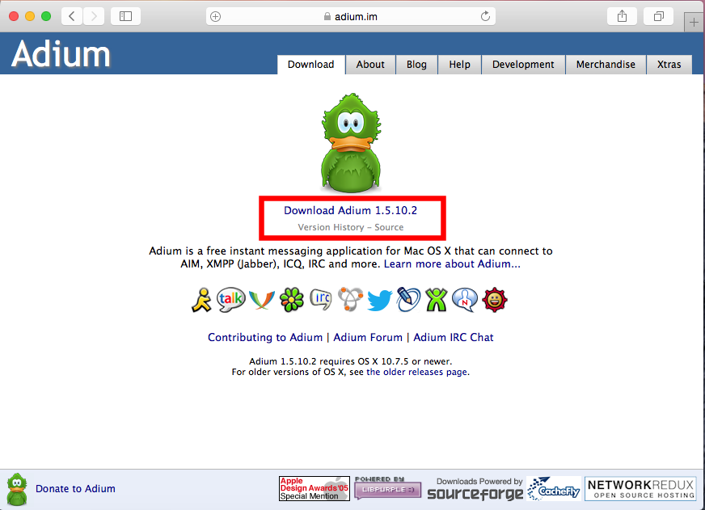
Figure 1: Preuzmite Adium sa interneta.
Nakon toga pokrenite preuzeti fajl kako bi ste instalirali Adium.
Kada se program pokrene prevuciite sliku zelene patke u folder sa desne strane
kako bi se Adium instalirao.
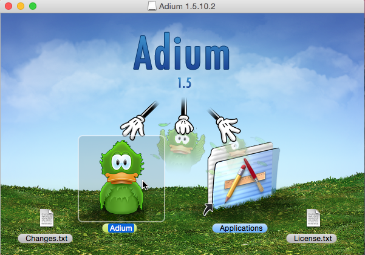
Figure 2: Prevucite zelenu patku (logo Adium-a) u folder "Applications"
kao što je prikazano
3. Podešavanje Adium-a
Kada se Adium instalirao, nova ikonica će biti postavljena u "Launchpad-u"
odakle možete pokrenuti Adium.
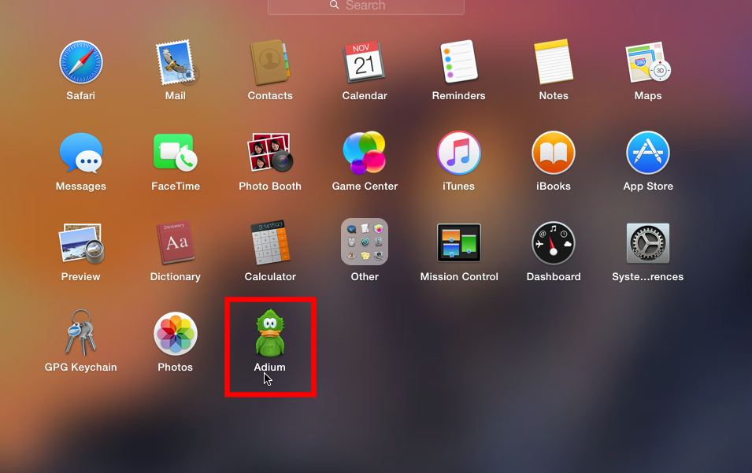
Figure 3: Pokrenite Adium iz Launchpad-a
Ukoliko vas upozori da Adium nije Eplov, slobodno ga pokrenite.
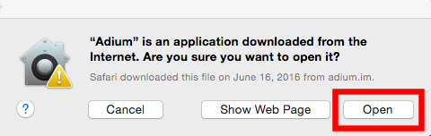
Figure 4: Slobodno pokrenite Adium, MacOSX upozorava na pokretanje
svih aplikacija koje nisu iz Epla.
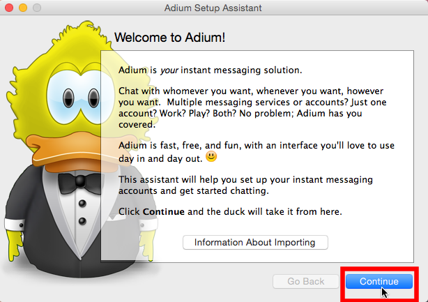
Figure 5: Kada se Adium pokrene poželeće vam dobrodošlicu,
samo produžite dalje.
Zatim je potrebno da odaberete protokol za koji konfigurišete nalog.
Mi u ovom uputstvu koristimo XMPP/Jabber protokol za komunikaciju, a vi
možete odabrati i neki drugi (dalja podešavanja će biti malo drugačija) jer
je OTR protokol za šifrovanje nezavisan od protokola za komunikaciju, pa
će najverovatnije raditi i sa "Google talk"-om ili "IRC"-om.
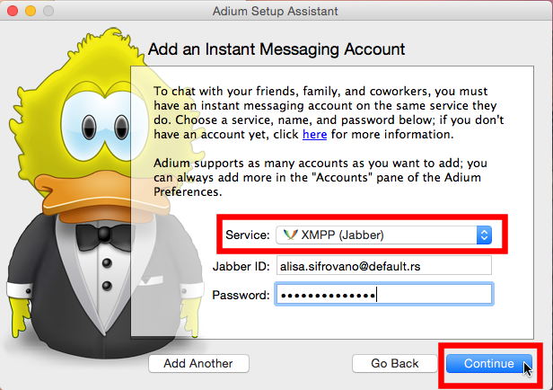
Figure 6: Odaberite XMPP/Jabber protokol i unesite ID i šifru za vaš nalog,
i pritisnite "Next"
Ukoliko nemate otvoren nalog na nekom XMPP serveru to možete uraditi kasnije
(videti odeljak registrovanje novog XMPP naloga), sada samo ostavite ID i šifru.
Ako ne znate koji XMPP server da koristite, listu javnih XMPP servera možete naći na
list.jabber.at.
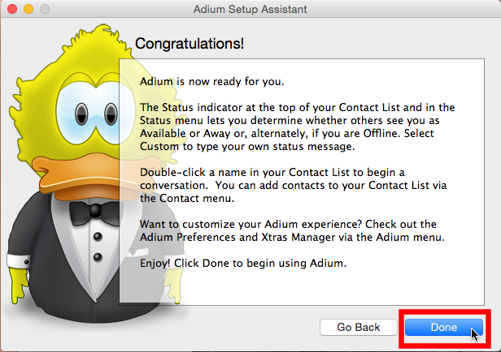
Figure 7: Adium će vas obavestiti da je sve spremno, samo produžite.
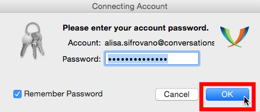
Figure 8: Potvrdite još jednom kredencijale vašeg naloga i to je to.
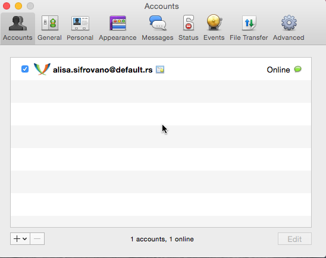
Figure 9: Ovako bi trebalo da izgleda ako ako je sve prošlo kako treba i vaš
nalog je dostupan (eng. online)
4. Otvaranje novog XMPP naloga
Ukoliko nemate XMPP nalog ili ukoliko želite da otvorite novi ispratite i ovo
podpoglavlje, a ukoliko već imate neki XMPP otvoren nalog ovo slobodno preskočite.
Dakle jednom kada pokrenete Adium, imaćete opciju "Preferences" (u
vrhu ekrana), kliknite na nju.
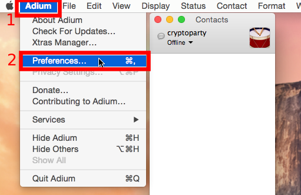
Figure 10: Otvorite Adium -> Preferences.
A zatim idite u "Accounts" tab, kliknite na plus ikonicu (u donem levom
uglu) da dodate novi nalog i odaberite XMPP protokol.
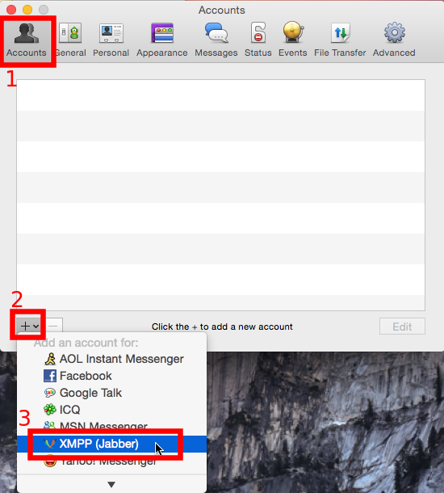
Figure 11: Accounts -> + > XMPP/Jabber.
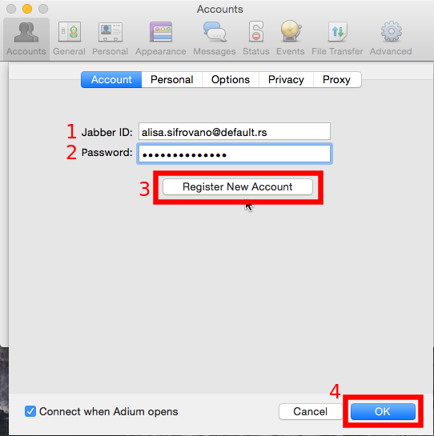
Figure 12: Unesite željeni ID (korisničko-ime @ server),
kao i šifru za pristup tom nalogu.
Mi koristimo Alisa.Sifrovano kao korisničko ime i default.rs kao
XMPP server, a vi odaberite vaše korisničko ime i ako želite drugi server.
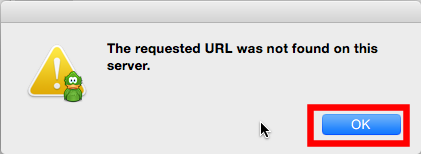
Figure 13: Može vam reći da URL nije dobar...
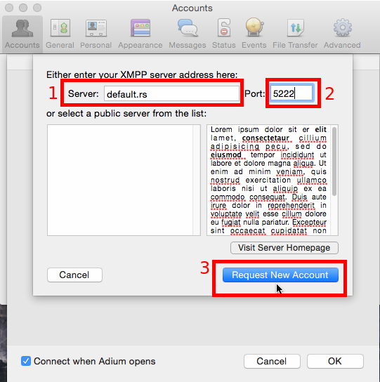
Figure 14: I onda morate uneti adresu XMPP servera kao i port
(podrazumevan port za XMPP servere je 5222).
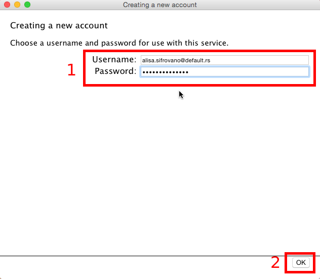
Figure 15: Onda će se otvoriti novi prozor koji će tražiti da potvrdite
korisničko ime i šifru, a zavisno od servera može vam dati i link ka
CAPTCHA veb strani i još jedno polje u koje treba da unesete slova i
brojeve prikazane na datoj veb strani CAPTCHA-e.
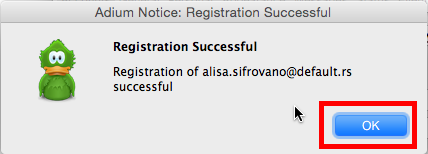
Figure 16: I ukoliko sve dobro prođe, obavestiće vas o uspešno
registrovanom novom nalogu.
4. Podešavanja
4.1. Dodatna podešavanja za veću privatnost
Ova podešavanja su opciona, ali svakako doprinose većoj privatnosti korisnika.
Prvo podešavanje se odnosi na onemogućavanje logovanja poruka,
jer iako su poruke šifrovane u putu između vas i vašeg sagovornika, one se
dešifruju na vašem računaru, i Adium dešifrovane poruke podrayumevano
čuva nezaštićene na disku.
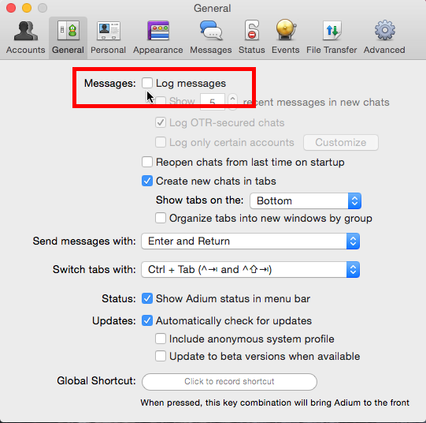
Figure 17: Onemogućite logovanje, Adium -> Preferences -> General.
Drugo podešavanje se odnosu na notifikacije, jer će vas Adium obaveštavati o
novim porukama, tj. iskakaće novi prozorčić sa dešifrovanom porukom svaki put.
Iako se ove notifikacije neće čuvati na disku, preporuka je isključiti
ih kako sam operativni sistem nebi imao uvid u privatne poruke.
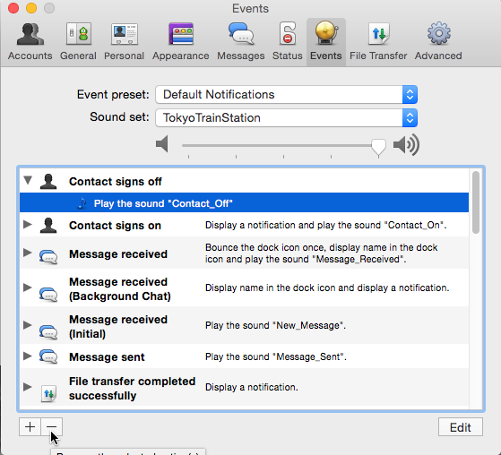
Figure 18: Onemogućite notifikacije, , Adium -> Preferences -> Events.
4.2 Podešavanja OTR-a
Kada ste podesili svoj nalog, potrebno je da generišete svoj OTR kluč i tako
dobije svoj jedinstveni OTR otisak (eng. OTR fingerprint).
Ovo je obavezno kako bi mogli da kasnije koristite ovako generisan ključ
za šifrovanu komunikaciju.
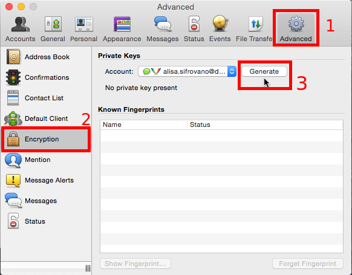
Figure 19: Generišite novi OTR ključ,
Adium -> Preferences -> Advanced -> Encryption
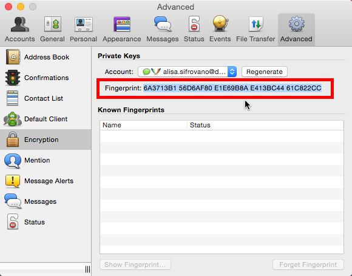
Figure 20: Kada se kluč generiše prikazaće vam se vaš jedinstveni otisak.
40 heksadekadnih karaktera (5 grupa po 8 karaktera).
5. Dodavanje kontakta
Kada ste podesili nalog i imate OTR ključ, potreban vam je sagovornik.
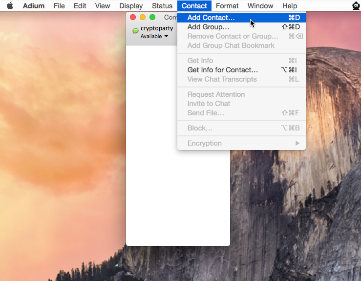
Figure 21: Kliknite na Adium, pa u gornjem ocpcionom meniju izaberite
"Contacts" pa "Add Contact"
Kontakt mora da ima nalog na nekom XMPP serveru kao i vi, i da koristi
OTR (da ima generisan sopstveni OTR ključ), ali ne mora da ima nalog na istom serveru
kao i vi, već kao u našem primeru, kontakt boban.sifrovano@rows.io
koristi rows.io XMPP server.
Za razliku od nas jer mi imamo nalog na default.rs XMPP serveru.
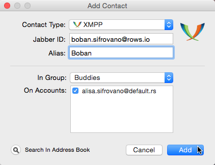
Figure 22: Izaberite XMPP protokol (protokol mora biti isti kao i za vaš
nalog), ID kontakta i opciono nadimak.
Zatim bi naš kontakt trebao dobiti obaveštenje da hoćemo da stupimo
u kontakt sa njime i može da odabere da li želi ili ne da nas prihvati.
Ako niste sigurni da li je ovaj zahtev poslat, možete ga ponovo poslati.
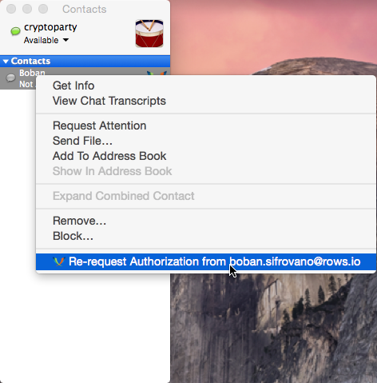
Figure 23: Ponovo pošaljite zahtev za stupanje u kontakt ako niste sigurni
da je vaš sagovornik dobio obaveštenje. Desni klik na kontakt i
"Re-request Authorization from ..."
Takođe neko može dodati vas u svoje kontakte i u tom slučaju vi će te
primiti obveštenje slično o tom dogadjaju i imati opciju da takav "poziv sa
prijateljstvo" prihvatite ili ne.
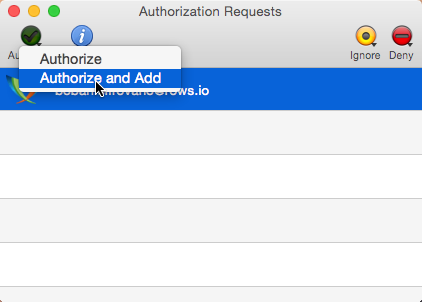
Figure 24: Prihvatite poziv kontakta ako ga poznajete.
Kliknite "Authorize" -> Authoriza and add" da bi ste dodali novog kontakta
ukoliko je zatražio da stupi u kontakt sa vama.
6. Šifrovanje dopisivanja
Kada ste dodali novog kontakta, i ako i on ima OTR ključ, može početi
šifrovana konverzacija.
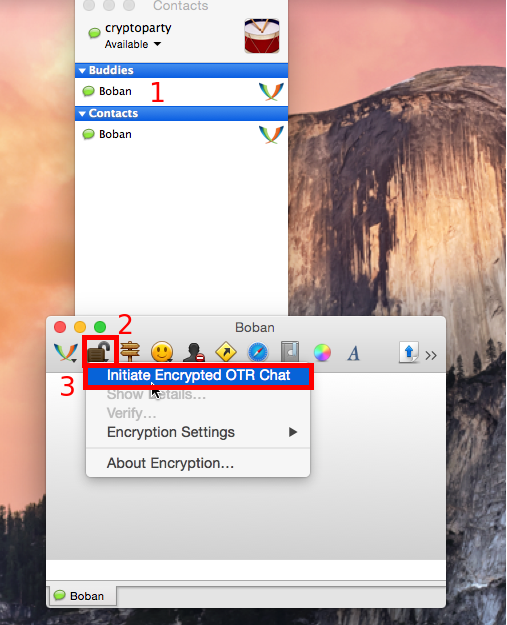
Figure 25: Dva puta brzo kliknite na kontakta iz glavnog prozora da bi
ste otvorili prozor za dopisivanje. Zatim je potrebno da kliknete na ikonicu
otvorenog katanca i onda na "Initiate Encrypted OTR chat" kako bi započeli
šifrovanu konverzaciju.
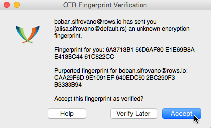
Figure 26: Potrebno je da verifikujete sagovornikov OTR otisak, i onda
šifrovana konverzacija počinje.